Найдено несколько моделей. Все модели предельно простые и быстро печатаются.
Поворотный стреплок из двух частей
На гитарную пимпу надеваются две части стреплока через широкую часть отверстия, потом одна часть поворачивается на 180 градусов.
Вриант 1: https://www.thingiverse.com/thing:1320905
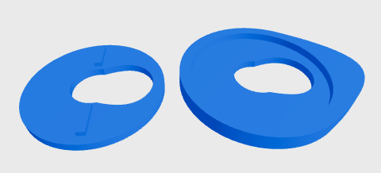
Вариант 2: https://www.thingiverse.com/thing:1990365
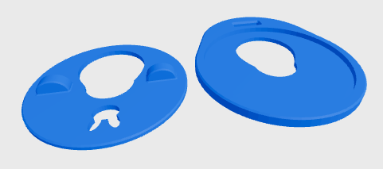
На ремне выглядит примерно вот так:
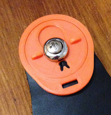
Вариант 3: https://www.thingiverse.com/thing:3033654
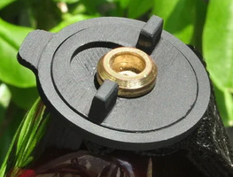
Третий вариант не имеет лишних вырезов и у него более крупные выступы на крутилке.
Стреплок из одной детали
https://www.thingiverse.com/thing:695484
Работает как стопорное кольцо.
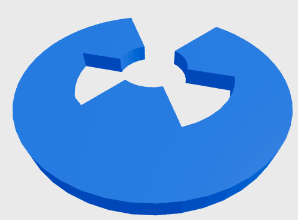
На ремне выглядит так:
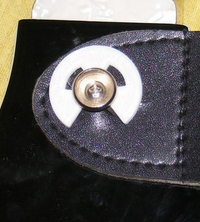
Для любого вариант стреплоков лучше печатать две детали для передней и задней пимпы, но последовательно - сначала одну, потом вторую. Так будет быстрее, и после печати первого стреплока можно его сразу примерить на гитару, и понять работает он или нет.
Стреплок - прищепка
https://www.thingiverse.com/thing:6412068
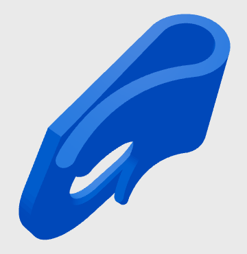
На задней пимпе через него, сбоку, там где плавный изгиб, пропускается провод от гитары, создавая "петлю безопасности". Эта петля нужна чтобы провод с джеком не повреждался если случайно дернуть провод. Петлю безопасности делают и без такого стреплока, просто пропуская провод между корпусом гитары и ремнем.
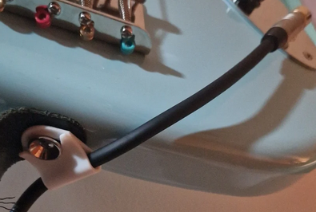
Простая страховочная защелка
https://www.thingiverse.com/thing:6494649
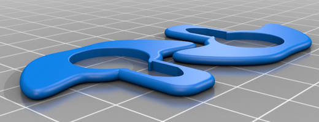
Защелка одевается через большое отверстие и сдвигается так чтобы пимпа оказалась над малым продолговатым отверстием. Модель идет сразу с двумя защелками.
Стреплок - боченок с местом для логотипа
https://www.thingiverse.com/thing:6458772
Стреплок состоит из двух частей. Вначале верхняя часть не до конца надевается на нижнюю.
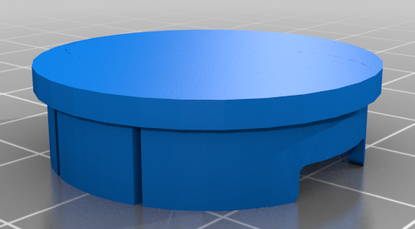
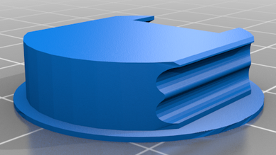